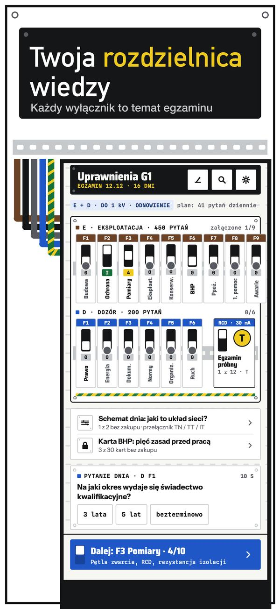
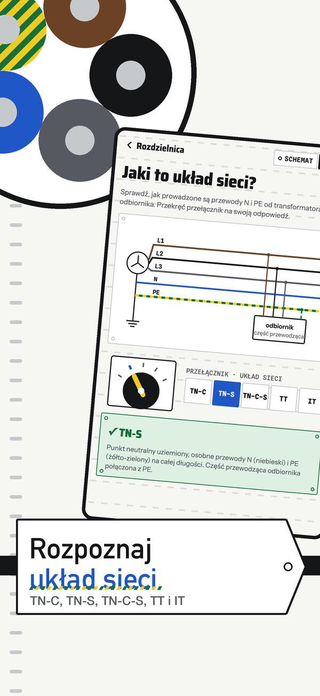
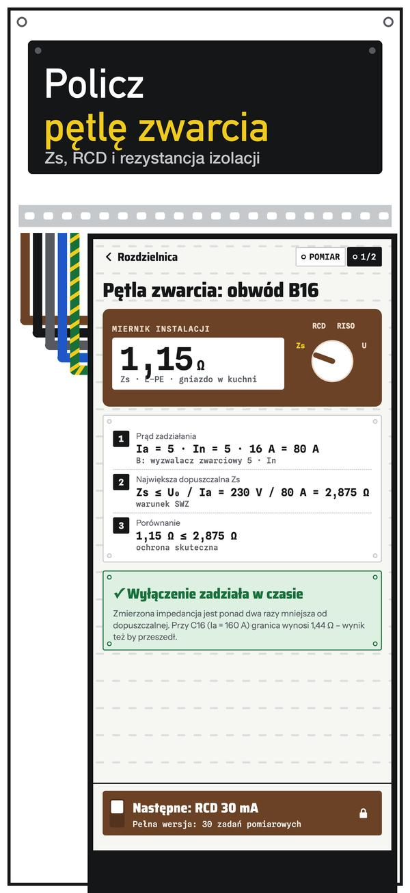

Uprawnienia G1 – egzamin E i D
Elektryk: pytania i schematy
Jeden zakup – bez abonamentu. Uprawnienia G1 pomaga powtórzyć wiedzę przed egzaminem na świadectwo kwalifikacyjne w grupie 1 – eksploatacja (E) i dozór (D). Twoja wiedza to rozdzielnica: każdy wyłącznik to jeden temat z zakresu egzaminu, a załączony wyłącznik – temat opanowany.



- 650 własnych pytań: E 450 w 9 obwodach, D 200 w 6
- Wyjaśnienie i źródło do każdej odpowiedzi
- Schematy sieci TN-C, TN-S, TN-C-S, TT i IT z przełącznikiem
- Zadania pomiarowe: pętla zwarcia, RCD, izolacja
- 12 egzaminów próbnych: pytania testowe i odpowiedzi ustne
- 30 kart BHP i 25 streszczeń obwodów
- Błąd wybija obwód – dwie dobre odpowiedzi go załączają
- Offline, bez konta – dane zostają na urządzeniu
Wkrótce w App Store
Pomoc · Prywatność